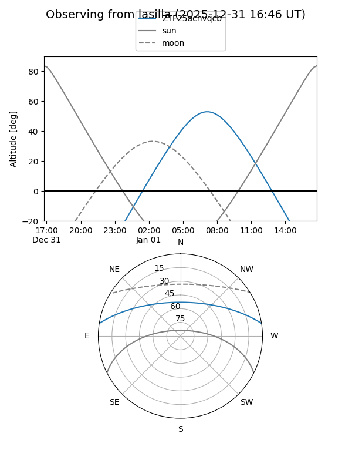
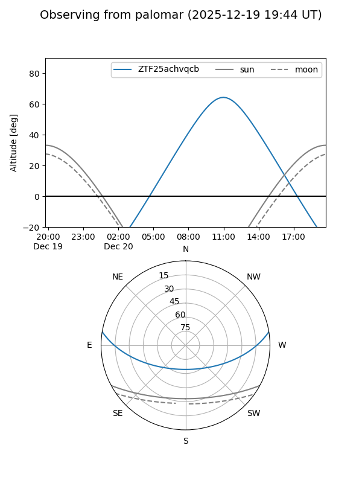

ZTF25achvqcb
Target ZTF25achvqcb at 2026-01-09 12:49
Aliases and brokers:
FINK: link
Lasair: link
ALeRCE: link
alt names
ZTF25achvqcb (ztf,fink_ztf)
Coordinates:
equatorial (ra, dec) = 136.8320,+7.82175
equatorial (HMS+DMS) = 09:07:19.67,+07:49:18.29
galactic (l, b) = (222.0124,+33.69344)
Flags:
Photometry:
last ztfr=20.12
2 ztfr detections
Lightcurve

Visibility


Additional plots